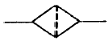
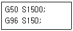

금형제작기능장 (2004-07-18 기출문제)
1과목: 임의 구분
1. 압축공기의 특징과 관계없는 것은 ?
- 화재 및 폭발이 용이하다.
- 저장탱크에 저장할 수 있다.
- 온도변동에 비교적 둔감하다.
- 누설되더라도 오염과는 관계없다.
(정답률: 알수없음)

2. 다음 그림에 해당되는 용어는 ?

- 에어드라이어
- 필터
- 드레인 배출기
- 열 교환기
(정답률: 알수없음)
3. 다음 공압의 특징을 설명한 것 중 옳은 것은?
- 에너지 축적이 용이하다.
- 인화의 위험이 없다.
- 제어방법 및 취급이 간단하다.
- 비압축성이다.
(정답률: 알수없음)
4. 유압유의 점성이 지나치게 클 경우에 해당되지 않는것은?
- 마찰에 의한 열의 발생이 적다.
- 밸브나 파이프를 지날 때 압력손실이 많다.
- 마찰손실에 의한 펌프동력의 소모가 크다.
- 유동저항이 지나치게 많아진다.
(정답률: 알수없음)
5. 유압 작동유의 구비 조건으로 옳지 않은 것은?
- 장시간 사용하여도 화학적으로 안정되어야 한다.
- 열은 외부로 방출되어서는 안 된다.
- 녹이나 부식이 없어야 한다.
- 적정한 점도가 유지 되어야 한다.
(정답률: 알수없음)
6. 고용체 처리에 의해서 시효경화 시키는 합금은 어느 것인가 ?
- Al - Si
- Cu - P
- Al - Cu
- Cu - Pb
(정답률: 알수없음)
7. 공구강의 경도증가 성능향상 및 게이지 또는 베어링 등의 정밀기계 부품의 조직을 안정하게 하여 시효에 의한 형상 및 치수의 변화를 방지시킬 수 있는 처리는?
- 심냉처리
- 표면경화처리
- 구상화처리
- 칠드(chilled)화
(정답률: 알수없음)
8. Austenite강을 재결정 온도이하 Ms점 이상의 온도범위에서 소성 가공후 소입하는 조작은?
- Martemper
- Ausforming
- Isothermal Tempering
- Austemper
(정답률: 알수없음)
9. 다음 중 비파괴검사법에 해당되지 않는 것은 ?
- 자분탐상법
- 크리프검사법
- 초음파탐상법
- 방사선탐상법
(정답률: 알수없음)
10. 6.4 황동에 1% Fe 내외를 첨가한 고강도 황동인 철황동을 다른 말로 무엇이라고도 하는가?
- 망간황동
- 네이벌황동
- 델타메탈
- 톰백
(정답률: 알수없음)
11. 다음중 Ni-Cr강의 특징 중 틀린 것은?
- 강인하여 열처리 효과가 크고 항복강도가 크다.
- 뜨임 취성이 생기지 않는다.
- 내식 및 내마모성이 우수하다.
- 병기재료, 자동차용 부품등 광범위하게 사용된다.
(정답률: 알수없음)
12. 다음중 미이하나이트(Meehanite)주철을 설명한 것은?
- 내마모성, 내식성이 있으며 용융된 쇳물에 Ca-Si를 첨가해서 흑연을 균일하게 석출시킨 것이다.
- 작은 주물의 제작에 적합하고 Si를 1.0%정도로 제한하여 냉각속도를 느리게 하여 제조한다.
- 50~70%의 강철 칩을 배합하여 만든 것이다.
- 탄소량을 2.0% 정도로 하여 용해시 코우크스를 석회유액에 담갔다가 사용하여 만든주철이다.
(정답률: 90%)
13. 성형할 수지가 실린더 안에서 충분히 가열되어 있지 않거나, 사출압력이 낮은 경우 또는 금형온도가 매우 낮을 때 캐비티 전체로 수지가 돌아가지 않고 냉각 고화해서 성형품의 일부가 부족되는 현상은?
- 플래시
- 싱크마크
- 충적부족
- 태움
(정답률: 알수없음)
14. 사출성형기의 형체력을 설명한 것이다. 옳은 것은? (단. P(kgf/cm2) : 캐비티내의 단위 면적당 평균압력, A(cm2) : 캐비티내의 투영면적, F(ton) : 형체력)
- F ≥ P + A × 10-3
- F ＞ P + A × 10-3
- F ＜ P × A × 10-3
- F ≥ P × A × 10-3
(정답률: 알수없음)
15. 플라스틱 재료 중 ABS 수지를 설명한 것이다. 옳은 것은?
- 흐름이 매우 좋다.
- 성형 가공성 및 치수 안정성이 우수하다.
- 내충격성, 강인성, 컬러링(coloring)이 좋지 않다.
- 전선피복, 고주파 부품, 포장제 등에 많이 사용된다.
(정답률: 알수없음)
16. 투영면적이 크고 성형품의 측면에 게이트를 붙일 수 없을 때 사용하며 비교적 변형이 적은 성형품을 만들 수 있는 게이트는 어떤 것인가?
- 링 게이트
- 핀 포인트 게이트
- 디스크 게이트
- 팬 게이트
(정답률: 알수없음)
17. 플런저의 지름 D = 40 mm이고, 사출속도가 5 cm/sec일 때 사출률(cm3/sec)을 구한 값은?
- 69.5
- 72.8
- 62.8
- 71.2
(정답률: 64%)
18. 사출성형금형설계 시 냉각수 통로에 대한 주의점에 해당하지 않는 것은?
- 냉각면적을 크게 하는게 효과적이다.
- 냉각수 구멍은 코어와 캐비티 주위에 균일하게 해야한다.
- 온도가 올라가기 쉬운 곳 부터 냉각시킨다.
- 냉각수공은 많이 설치 하는게 좋다.
(정답률: 알수없음)
19. 성형 조건에 따른 성형수축률의 변동에 대한 설명 중 틀린 것은?
- 사출 압력이 높으면 수축률은 작아진다.
- 스크류 전진시간을 게이트의 고화시간 보다 길게 하면 수축률은 작아진다.
- 게이트의 단면적이 작아지면 성형수축률은 크게된다
- 금형온도가 높아지면 성형수축률은 작아진다.
(정답률: 알수없음)
20. 다음 스프링백을 설명한 것 중 틀린 것은?
- 단단한 금속의 스프링백은 크고, 무른 금속에서는 적게된다.
- 굽힘 반지름이 클 수록 스프링백은 크고, 반지름을 작게 하면 적게 된다.
- 굽힘 각도가 클 수록 스프링백은 크고, 각도가 작으면 적다.
- 얇은 판과 탄성한도가 높은 재료 일수록 스프링백은 작다.
(정답률: 알수없음)
2과목: 임의 구분
21. 냉간단조 금형 후방압출 펀치(Punch)가 받는 압축응력의 범위로 가장 적당한 것은?
- 250∼300 kgf/mm2
- 50∼100 kgf/mm2
- 100∼150 kgf/mm2
- 350∼400 kgf/mm2
(정답률: 알수없음)
22. 고속가공용 프로그레시브 다이가 갖춰야 할 사항중 가장 관계가 적은 것은?
- 일반 금형보다 하홀더(다이셋)를 두껍게 한다.
- 스트리퍼의 작동은 코일스프링보다 우레탄 고무가 좋다.
- 슬러그를 제거 시켜야 한다.
- 각종 금형 보호장치가 필요하다.
(정답률: 알수없음)
23. 드로잉 제품에서 제품에 주름이 생기는 가장 큰 이유는?
- 블랭크홀더 압력계산이 기준보다 약하다.
- 클리어런스가 계산치와 맞게 제작 되었다.
- 블랭크홀더 압력계산이 기준보다 강하다.
- 펀치 다이의 가공 정도는 이상이 없다.
(정답률: 알수없음)
24. 어떤 제품을 블랭킹하는데 6ton의 전단력이 소요된다. 다이 두께는 얼마로 하는 것이 가장 적당한가? (단, 보정계수 k=1.25이다.)
- 약 14.2mm
- 약 18.6mm
- 약 22.8mm
- 약 96.8mm
(정답률: 60%)
25. 녹 아웃(knock-out)장치는 어떠한 역할을 하는 장치인가?
- 굽힘가공에서 재료가 튀어오름을 저지하는 장치
- 프레스 가공시 소재의 이송 제한 장치
- 펀치나 다이플레이트를 다이셋트의 바른 위치에 고정시켜 주는 장치
- 프레스 가공된 제품을 금형으로부터 빼주는 역할을 하는 장치
(정답률: 알수없음)
26. 원형의 와셔 제품을 거스러미의 방향을 같게 하면서 가공 공정을 최소화시킨 가장 적합한 금형구조는?
- 트랜스퍼 다이(transfer die)
- 정밀 블랭킹 다이(fine blanking die)
- 복합 다이(compound die)
- 프로그래시브 다이(progressive die)
(정답률: 80%)
27. 금형을 프레스에 설치 전 작업 사항이 아닌 것은?
- 녹 아웃 봉을 풀어준다.
- 램의 상사점 위치를 확인한다.
- 램의 조절 나사를 풀어준다.
- 금형이 들어가게 램을 올린다.
(정답률: 알수없음)
28. 머시닝센터(Maching center)에서 준비기능 코드 GO2의 기능은?
- 위치결정
- 직선보간
- 시계방향의 원호보간
- 드웰결정
(정답률: 알수없음)
29. 지그보링기의 작업 조건을 설명한 것 중 가장 거리가 먼 것은?
- 작업장 내의 온도는 20℃ ± 1℃ 이내로 유지 시키는 것이 좋다.
- 외부로 부터의 진동이 전달되지 않도록 방진처리한다.
- 햇빛이 닿는 밝은 쪽이 좋다.
- 공기필터를 통하여 바깥공기를 빨아들이는 환기방식이 좋다.
(정답률: 알수없음)
30. 금형제작에 사용되는 모델의 재료로서 갖추어야 할 조건 중 틀린 것은?
- 가공이 용이하며, 작업이 간단할 것
- 내마모성과 내열성이 클 것
- 정확한 복제가 될 수 있을 것
- 팽창, 수축 등의 변화가 적을 것
(정답률: 80%)
31. 다음 중 분말야금의 특징에 속하지 않은 것은?
- 용융점이 높은 금속의 성형이 쉽다.
- 금속과 비금속을 균일하게 결합시킬 수 있다.
- 다공질의 금속제품이 가능하다.
- 치수가 정확한 제품의 절삭가공에 적합하다.
(정답률: 알수없음)
32. 금형강재를 연삭 해보니 연삭열에 의해 균열이 발생하였다. 이런 경우의 개선 대책중 잘못 된 것은?
- 냉각능력이 높은 연삭액을 다량 사용한다.
- 결합도가 큰 숫돌로 바꾼다.
- 눈막힘이 발생된 숫돌은 곧 교정한다.
- 조직이 거친 숫돌로 바꾼다.
(정답률: 82%)
33. 전자 빔 가공에 대한 설명 중 틀린 것은?
- 고경도 재료인 다이아몬드를 가공 할 수 있다.
- 복잡한 형상을 가공 할 수 있다.
- 열가공이므로 열영향이 적은 가공을 할 수 없다.
- 미소 부분 μm이하의 가공이 가능하다.
(정답률: 알수없음)
34. 금속판의 두께는 변하지 않고 여러 가지 모양의 얇은 돌출을 만드는 가공은?
- 비딩가공
- 버링가공
- 엠보싱가공
- 시밍가공
(정답률: 알수없음)
35. 링크기구를 이용한 클램프는?
- 스트랩 클램프
- 토글 클램프
- 쐐기형 클램프
- 캠 클램프
(정답률: 알수없음)
36. 다음 재료의 기호중 탄소강 단강품을 표시하는 것은?
- SB
- SF
- SM
- SK
(정답률: 알수없음)
37. 4개의 링크로 된 연쇄에서 그 순간 중심의 총수는?
- 4개
- 2개
- 6개
- 8개
(정답률: 알수없음)
38. 지그를 설계할 때 고려해야 할 사항 중 가장 적합하지 않는 것은?
- 지그 부품은 무겁게 설계되었는가
- 하중이 가장 많이 걸리는 곳은 어느 부분인가
- 가공하기 쉬운 모양인가
- 부착 및 탈거가 간단히 이루어지는 구조인가
(정답률: 75%)
39. 공작기계 자체로는 절삭할 수 없는 윤곽을 절삭할 수 있도록 절삭공구를 안내하는 데 사용되는 고정구는 어느 것인가?
- 플레이트 고정구(plate fixture)
- 앵글 플레이트 고정구(angle plate fixture)
- 총형 고정구(profiling fixture)
- 분할 고정구(indexing fixture)
(정답률: 알수없음)
40. 유리제 표준자로서 강철제 블록을 측정한 결과 222.150mm였다. 이 때 유리제 표준자의 온도가 24℃, 강철제 블록의 온도가 28℃ 였다면, 표준온도에서의 강철제 블록의 길이는 얼마인가? (단, 유리제 표준자의 열팽창 계수는 8.1× 10-6/℃이며, 강철의 열팽창 계수는 11.5× 10-6/℃ 이다.)
- 222.137mm
- 222.148mm
- 222.250mm
- 222.287mm
(정답률: 알수없음)
3과목: 임의 구분
41. 나사의 유효경 측정법 중 주로 나사게이지 등과 같이 정밀도가 높은 나사에 대하여 적용하는 방법은?
- 나사 마이크로미터에 의한 측정법
- 검사용 나사게이지에 의한 측정법
- 측정 현미경에 의한 측정법
- 3침법에 의한 측정법
(정답률: 알수없음)
42. 표면 거칠기 측정법이 아닌 것은?
- 삼선식
- 광학적 반사식
- 현미 간섭식
- 광 절단식
(정답률: 알수없음)
43. 기포실이 있는 정밀 측정용 수준기의 기포가 기준길이 보다 길 때 조정하는 방법 중 맞는 것은?
- 기포실을 위로 하여 수직으로 세우고 2-3회 흔든다.
- 기포실을 아래로 하고 수직으로 세워 2-3회 흔든다.
- 기포실 조정나사로 조정한다.
- 분해하여 기포실을 열고 액체를 더 장입한다.
(정답률: 알수없음)
44. 구멍용 한계 게이지가 아닌 것은?
- 원통형 플러그 게이지
- 판 플러그 게이지
- 봉 게이지
- 스냅 게이지
(정답률: 알수없음)
45. 고급의 모델링 기법으로서 공학적인 해석을 할 때 사용되며, 여러 물리적 성질(부피, 무게중심, 관성모멘트)등이 제공되는 모델링은?
- 와이어 프레임 모델링
- 서피스 모델링
- 솔리드 모델링
- 와이어 모델링
(정답률: 알수없음)
46. 다음과 같은 프로그램에서 ø50mm 일 때 주축의 회전수는 몇 rpm인가?

- 150
- 955
- 1500
- 9550
(정답률: 알수없음)
47. 1.2 초간 일시 정지 기능을 사용할 때 적합한 NC 코드가 아닌 것은?
- G04 X1.2
- G04 Z1.2
- G04 U1.2
- G04 P1200
(정답률: 알수없음)
48. 컴퓨터 네트워크 기술을 이용하여 물건과 정보의 흐름을 일체화시켜 경영 효율화를 기하기 위한 자기 통제 기능을 가진 유연한 생산 시스템을 표현하는 약어는?
- FMS
- CIM
- CAD/CAM
- CAPP
(정답률: 알수없음)
49. NC공작기계의 경제성 평가방법 중 NC공작기계의 도입에 따른 연간 절약 비용의 예측값을 투자액에 비교하여 투자액을 보상하는데 필요한 년수를 구하는 방법을 무엇이라 하는가?
- 페이백(payback)
- MAPI
- 연간투자분석법
- BOM
(정답률: 알수없음)
50. 다음은 자동화시스템에 사용되는 제어기이다. 제어기(Controller)가 아닌 것은?
- PC
- PLC
- 서보모터(servo motor)
- 마이크로프로세서
(정답률: 70%)
51. 다음 전동기 중에서 물체의 위치와 속도, 가속도 등 방향 및 자세등의 기계적인 변위를 제어량으로 하고, 시간에 따라 변화하는 제어량이 목표값에 정확히 추종하도록 하려고 할때, 가장 적합한 전동기는?
- 서보 전동기
- 유도 전동기
- 정.역회전 전동기
- 브러시리스 전동기
(정답률: 90%)
52. 공압시스템에서 고장의 원인이 아닌 것은?
- 공급 공기유량 부족으로 인한 고장
- 수분으로 인한 고장
- 이물질로 인한 고장
- 외부온도에 의한 고장
(정답률: 알수없음)
53. 다음 중 발광 다이오드(LED)에 대한 설명 중에서 틀린 것은 ?
- 반도체 소자이다.
- 교류, 직류겸용이다.
- 발광속도가 매우 빠르다.
- 구동전압이 약 2V 정도이다.
(정답률: 알수없음)
54. 정해진 작업순서에 의하여 공정이 진행되는 제어로 맞는 것은?
- 시퀀스 제어
- 논리 제어
- 디지털 제어
- 아날로그 제어
(정답률: 알수없음)
55. 미리 정해진 일정 단위중에 포함된 부적합(결점)수에 의거 공정을 관리할 때 사용하는 관리도는?
- p관리도
- nP관리도
- c관리도
- u관리도
(정답률: 알수없음)
56. 도수분포표에서 도수가 최대인 곳의 대표치를 말하는 것은?
- 중위수
- 비 대칭도
- 모우드(mode)
- 첨도
(정답률: 알수없음)
57. 로트수가 10 이고 준비작업시간이 20분이며 로트별 정미작업시간이 60분이라면 1로트당 작업시간은?
- 90분
- 62분
- 26분
- 13분
(정답률: 알수없음)
58. 더미활동(dummy activity)에 대한 설명중 가장 적합한 것은?
- 가장 긴 작업시간이 예상되는 공정을 말한다.
- 공정의 시작에서 그 단계에 이르는 공정별 소요시간들중 가장 큰 값이다.
- 실제활동은 아니며, 활동의 선행조건을 네트워크에 명확히 표현하기 위한 활동이다.
- 각 활동별 소요시간이 베타분포를 따른다고 가정할 때의 활동이다.
(정답률: 알수없음)
59. 단순지수평활법을 이용하여 금월의 수요를 예측할려고 한다면 이때 필요한 자료는 무엇인가?
- 일정기간의 평균값, 가중값, 지수평활계수
- 추세선, 최소자승법, 매개변수
- 전월의 예측치와 실제치, 지수평활계수
- 추세변동, 순환변동, 우연변동
(정답률: 알수없음)
60. 다음 중 검사항목에 의한 분류가 아닌 것은?
- 자주검사
- 수량검사
- 중량검사
- 성능검사
(정답률: 알수없음)